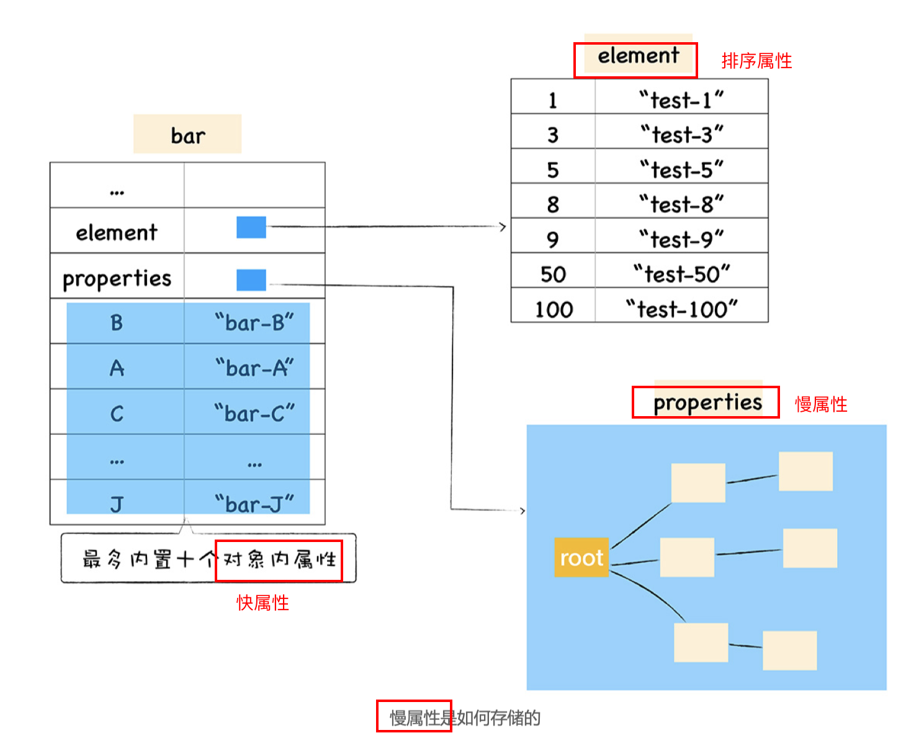
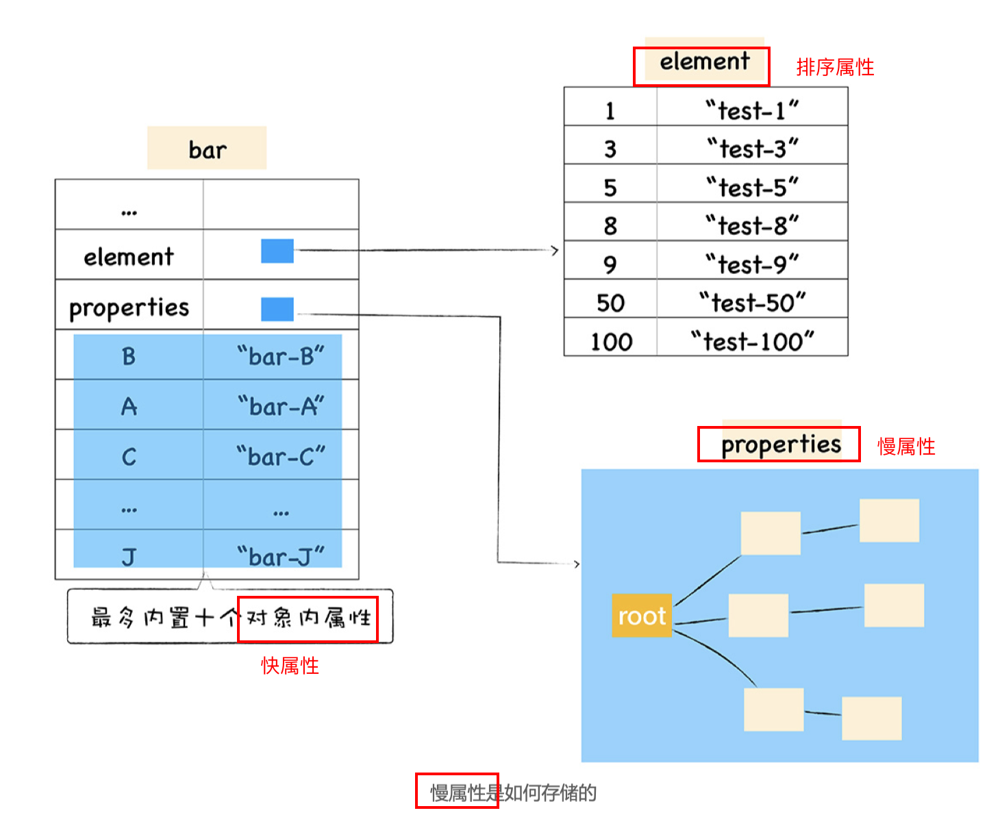
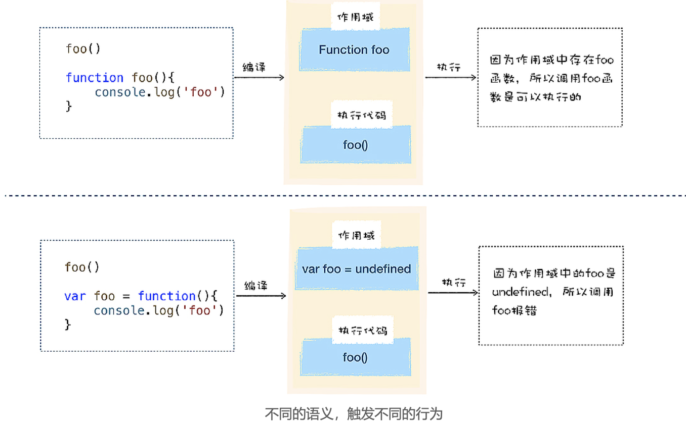
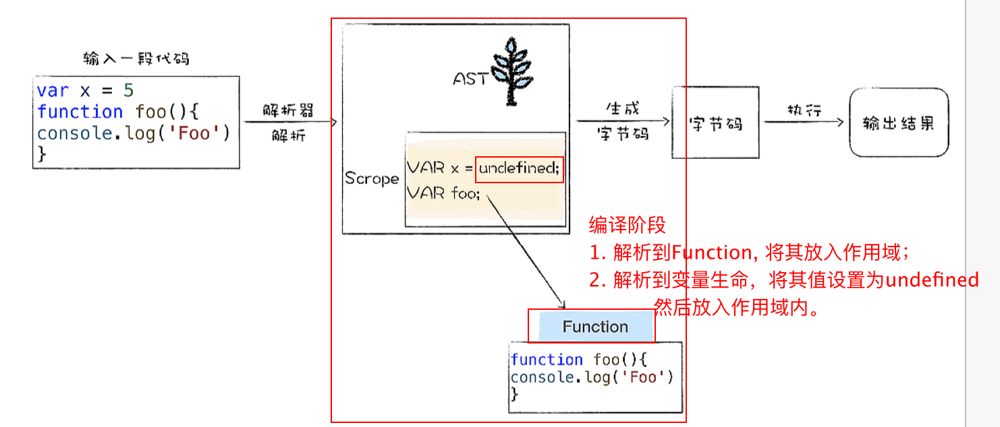

女人，你的名字是弱者。
女人，你的名字是弱者。Woman, your name is weak.
基础
V8是由 Google 开发的开源 JavaScript 引擎，也被称为虚拟机，模拟实际计算机各种功能来实现代码的编译和执行。那么，要想搞清楚 V8 内部的工作流程和原理，我们可以从分析计算机对语言的编译和执行过程入手。
V8采用混合编译执行和解释执行这两种手段，我们把这种混合使用编译器和解释器的技术称为 JIT（Just In Time）技术。
- 解释执行启动速度快，但是执行时速度慢，
- 编译执行启动速度慢，但是执行速度快。
快慢属性
JS中经常操作离不开对象，那么V8是以什么样的方式存取的对象呢
属性存储方式
JavaScript 中的对象是由一 组组属性和值组成的，所以最简单的方式是使用一个字典来保存属性和值，但是由于字典是 非线性结构，所以如果使用字典，读取效率会大大降低。
V8 在对象中添加了两个隐藏属性分为：常规属性 (properties) 和排序属性 (element)；
ECMAScript 规范中定义了数字属性应该按照索引值大小升序排列，字符串属性根据**创建时**的顺序升序排列`。
对象中的数字属性称为排序属性，V8 中被称为 elements；
字符串属性就被称为常规属性，V8中被称为 properties。
 

思考
不建议使用 delete 来删除属性，你能结合文中介绍的快属性和慢属性，给出不 建议使用 delete 的原因吗？
- 删除常规属性，查找开销较大,可能需要将慢属性重排到快属性。
- 删除排序属性，先查找在删除，删除后线性结构会出现间隙，要重新进行排序;
函数表达式
函数声明·与·函数表达式的差异：为何二执行报错？
 - 解析到函数声明，V8将
函数声明转换为内存中的函数对象， 并将其放到作用域中, 编译阶段放入堆内存； - 解析到了某个
变量声明，也会将其放到作用域中，但是会将其值设置为undefined，表示该变量还未被使用。 - 编译阶段将所有变量提升到作用域的过程，叫做：变量提升;
表达式 VS 语句
- 表达式：表示值的式子；有返回值；
- 语句：操作值的式子；可以操作表达式；
// 表达式 |
问题：V8 执行var x = 5这段代码的执行过程？
两段代码，一段是定义变量的语句，一段是赋值的表达式， 如下所示：
// 编译阶段完成 |
foo() |
编译阶段决定是否提升到作用域，执行阶段才赋值。
JS中有()运算符，中间可以放一个表达式；
(a = 4); |
小括号之间存放的必须是表达式，所以如果在小阔号里面定义一个函数，那么 V8 就会把这个函数看成是函数表达式，执行时它会返回一个函数对象。
存放在括号里面的函数便是一个函数表达式，它会返回一个函数对象，如果我直接在表达式后面加上调用的括号，这就称立即调用函数表达式（IIFE），比如下面代码：
(function)(){ |
函数立即表达式也是一个表达式，所以 V8 在编译阶段，并不会为该表达式创建函数对象。
这样的一个好处就是不会污染环境，函数和函数内部的变量都不会被其他部分的代码访问到。
思考题
var n = 1; |
- 编译阶段，先在全局作用域内声明变量 n 的值为undefined，然后声明函数表达式；
- 执行阶段，将 1 赋值给 n，函数表达式“立即执行”，
- 想要将 100 赋值给变量n，
- 但在当前作用域内没有找到 n 的声明，沿着作用域链向上查找，在全局作用域内找到了变量 n，将 100 赋给它，
- 接着执行立即函数调用表达式中的 打印语句，输出 n，为100
- 接着执行后面的打印语句，输出 n，为100；
var n = 1 |
- 编译阶段：
- 声明变量 n 的值为undefined，
- 函数声明提升到作用域
- 执行阶段
- 执行倒数第二行，输出1；
- 执行foo() –赋值【n=100–打印100】
原型链
不同的语言实现继承的方式是不同的，其中最典型的两种方式是基于类的设计和基于原型继承的设计。
继承就是一个对象可以访问另外一个对象中的属性和方法，在 JavaScript 中，我们通过原型和原型链的方式来实现了继承特性。
- C++、Java、C# 这些语言都是基于经典的类继承的设计模式
- ES2015/ES6 中引入了 class 关键字，但那只是语法糖，JavaScript 的继承依然和基于类的继承没有一点关系。不要以为 JavaScript 也是面向对象语言了
var animal = { |
但是__proto__是隐藏属性，不是标准定义，使用该属性会造成严重的性能问题，所以不应该使用。
采用构造函数创建对象
function DogFactory(type,color){ |
- 创建了一个空白对象 dog；
- 将 DogFactory 的
prototype属性设置为 dog 的原型对象 - 再使用 dog 来调用 DogFactory，这时候 DogFactory 函数中的 this 就指向了对象 dog，然后在 DogFactory 函数中，利用 this 对对象 dog 执行属性填充操作，最终 就创建了对象 dog。
apply 和 call
apply 和 call 作用一模一样，只是传参的形式有区别而已。
区别
- apply 方法传入两个参数：
- 函数上下文的对象，
- 函数参数所组成的
数组。
- call 方法传入两个参数：
- 函数上下文的对象，
- 一个参数列表，而不是单个数组。
var obj = { |
用法
改变this指向
var obj = { |
借用别的对象的方法
var Person1 = function () { |
调用函数
function func() { |
作用域链
JavaScript 的继承是基于原型链的，原型链将一个个原型对象串起来， 从而实现对象属性的查找，
作用域链就是将一个个作用域串起来，实现变量查找的路径。
var name = '极客时间' |
类型转换
参考之前的文章 ES系列-数据类型<1>
参考
用自己的方式（图）理解constructor、prototype、proto和原型链
JavaScript 中 apply 、call 的详解 #7